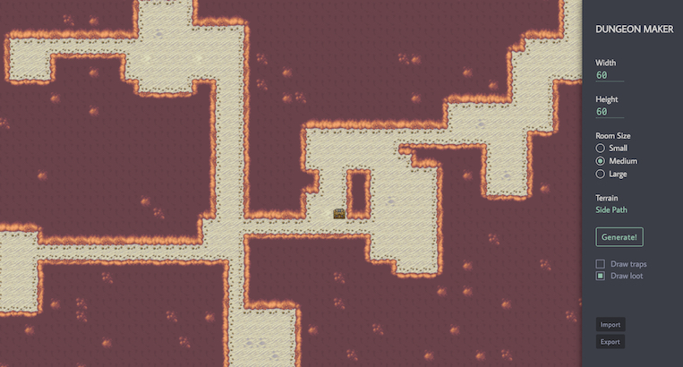

Mystery Dungeon
Java, JavaScript, Python & SQL / Apr — May 2019
A helper tool for the narrative game Dungeons and Dragons, which features a random dungeon generator, an enhanced REPL for rapid commands, and a battle manager. Data scraped with BeautifulSoup; designed with real users in mind.